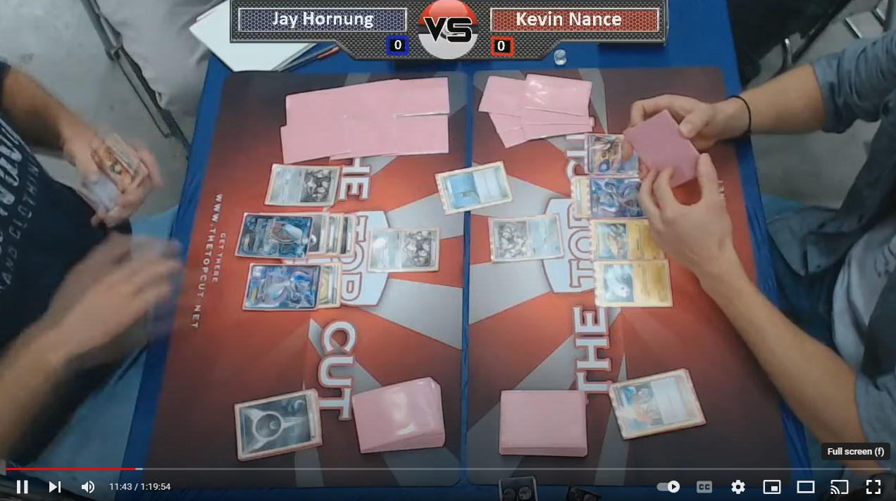
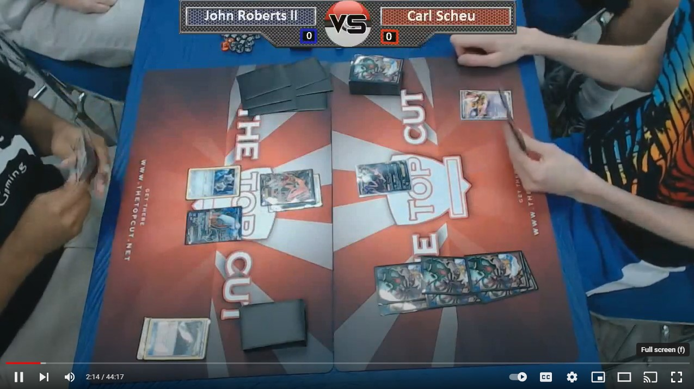

2012 US Nats - Winning Moment
John Roberts II (Klinklang) vs Kevin Nance (Mewtwo Eels) - final moments of the US National Championship's Finals match.
Closer-Up Video2012 US Nats - Masters Top 4
Jay Hornung (Darkrai Mewtwo) vs Kevin Nance (Mewtwo Eels) in Top 4 of the US National Championships.
2012 US Nats - Masters Top 8
John Roberts II (Klinklang) vs Carl Scheu (Darkrai Mewtwo) in Top 8 of the US National Championships.
2012 US Nats - Masters Top 16

Tom Dolezal (Darkrai) vs Dylan Bryan (Mismagius Vileplume) in Top 16 of the US National Championships.